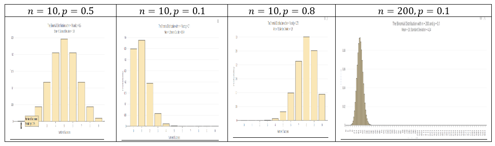
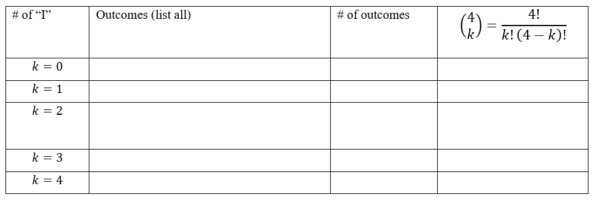
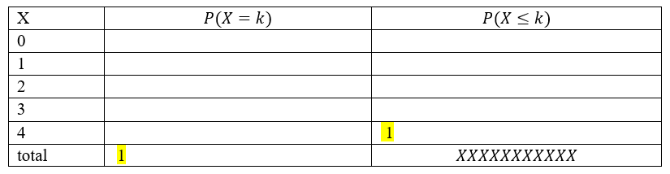

Chapter 6 MATH 224: Binomial Distribution Worksheet
6.1 Binomial Distribution Condition
Conditions to be satisfied for a Binomial Variable Distribution with a fixed number of trials \(n\):
- The trials are independent
- Each trial has two possible outcomes classified as success or failure
- The probability of a success \(p\) is the same for each trial
Probability Mean and Standard Deviation
For a binomial random variable \(X\) with \(n\) trials and the probability of a single trial being a success \(p\), the probability of observing exactly \(k\) successes is
\[ P(X = k) = \binom{n}{k} p^k (1-p)^{n-k} = \frac{n!}{k!(n-k)!} p^k (1-p)^{n-k} \quad (k = 0, 1, \ldots, n) \]
Where: - \(n! = 1 \times 2 \times \cdots \times n\) - \(0! = 1\) - \(\binom{n}{k} = \frac{n!}{k!(n-k)!}\) (read as “n choose k”, also called the combination coefficient)
Mean: \(\mu = np\)
Standard deviation: \(\sigma = \sqrt{np(1-p)}\)
Observations that are more than 2 standard deviations away from the mean are considered unusual:
Unusual if outside of \(\mu - 2\sigma\) and \(\mu + 2\sigma\)
Shape of Binomial Distribution
- For \(p < 0.5\): skew to the left
- For \(p > 0.5\): skew to the right
- For \(p = 0.5\): symmetric (centered at \(\mu\))
- For large \(n\), if \(np \geq 10\) and \(n(1-p) \geq 10\), the graph is approximately bell-shaped.

(Generated using online app https://istats.shinyapps.io/BinomialDist/)
Using R
For \(P(X = k)\):
dbinom(k, n, p)For \(P(X \leq k) = P(X < k+1) = P(X = 0) + P(X = 1) + \cdots + P(X = k)\):
pbinom(k, n, p, lower.tail = TRUE)(thelower.tail = TRUEcan be omitted)For \(P(X > k) = P(X \geq k+1) = 1 - P(X \leq k) = P(X = k+1) + \cdots + P(X = n)\):
pbinom(k, n, p, lower.tail = FALSE)For \(n!\):
factorial(n)For \(\binom{n}{k}\):
choose(n, k)
Using Calculator
- For \(P(X = x)\):
2ND→VARS(DISTR) → use arrow to selectbinompdf(enter \(n\), \(p\), \(x\)) thenenter
- For \(P(X \leq x)\):
2ND→VARS(DISTR) → use arrow to selectbinomcdf(enter \(n\), \(p\), \(x\)) thenenter
- For \(n!\):
- Example: \(7!\)
- Enter 7 then press
Mathkey; use (right) arrow key to selectPROBthen use (down) arrow key to select!(press enter it then shows7!); press theenterkey again (to get answer 5040)
- For \(\binom{n}{k}\):
- Example: \(\binom{9}{2}\)
- Enter 9 then
MATH→ arrow toPROB→ choosenCrthen enter 2 thenenterto get the result (answer is 36)
Exercise 1. (Combination Formula)
Survey four randomly selected students and record the outcomes as “I” (in state) or “O” (out state). Fill the table below.

Exercise 2 Find the probability of success of the Bernoulli trial with \(n\) trials, success probability \(p\), and the success \(k\):
- \(n = 3\), \(k = 2\), \(p = 0.35\)
- \(n = 5\), \(k = 3\), \(p = 0.2\)
Exercise 3.
For a binomial distribution with \(n = 4\), \(p = 0.7\). (As in exercise 1, assume that 70% are in-state students.)
(a). Write the formula for computing the probability of getting exactly \(k\) successes.
(b). Fill the following distribution table. (Round to 4 decimals) (you may use R calculator)

(c). What is the expected value?
(d). What is the standard deviation?
Exercise 4.
About 75% of dog owners buy holiday presents for their dogs. Suppose twenty dog owners are randomly selected, find the probability of:
(a). Exactly three buy their dog holiday presents
(b). Exactly seventeen do not buy their dog holiday presents
(c). Three or more buy their dog holiday presents
(d). At most four buy their dog holiday presents
(e). Minimum of 11 and maximum of 17 dog owners buy their dog holiday presents
(f). Find the expected number of dog owners in this sample, who buy their dog holiday presents.
(g). Is it unusual if 16 out of 20 randomly selected dog owners buy their dog holiday presents? Why?
(i). Is it unusual if 10 out of 20 randomly selected dog owners buy their dog holiday presents? Why?
6.1.1 Normal Distribution Worksheet
Review on Normal Distribution
Normal Distribution Facts
- It is a continuous random variable distribution over \((-\infty, \infty)\).
- Its probability density curve is symmetric bell-shaped (unimodal).
- It is completely determined by the mean \(\mu\) and standard deviation \(\sigma\), denoted by \(N(\mu, \sigma)\).
- \(N(0, 1)\) is called the standard normal distribution.

Using R to compute cumulative probability for \(X \sim N(\mu, \sigma)\)
- For \(P(X < b) = P(X \leq b)\):
pnorm(b, \mu, \sigma) - For \(P(X > a) = P(X \geq a)\):
pnorm(a, \mu, \sigma, lower.tail = FALSE)or1 - pnorm(a, \mu, \sigma) - For \(P(a < X < b)\):
pnorm(b, \mu, \sigma) - pnorm(a, \mu, \sigma)or1 - (pnorm(a, \mu, \sigma) + pnorm(b, \mu, \sigma, lower.tail = FALSE)) - For \(Z \sim N(0, 1)\): the mean and SD can be omitted in 1)-3):
- \(P(Z < b)\):
pnorm(b)
- \(P(Z < b)\):

To Compute Inverse Cumulative Probability (Finding x for Given Cumulative Probability)
- Find \(x\) for \(P(X < x) = p\):
qnorm(p, \mu, \sigma) - Find \(x\) for \(P(X > x) = p\):
qnorm(1 - p, \mu, \sigma)orqnorm(p, \mu, \sigma, lower.tail = FALSE)

Z-score
- If \(X \sim N(\mu, \sigma)\), the z-score of x is computed by \(z = \frac{x - \mu}{\sigma}\).
- The z-score measures how many standard deviations of x from the mean.
- \(Z = \frac{X - \mu}{\sigma} \sim N(0, 1)\)
- \(X = \mu + Z \cdot \sigma\)
- \(x = \mu\) if \(z = 0\); \(x > \mu\) if \(z > 0\); \(x < \mu\) if \(z < 0\)
Empirical Rule (68-95-99.7 Rule)
For a nearly normally distributed data, the empirical rule predicts that:
- 68% of observations fall within the first standard deviation (\(\mu\) ± \(\sigma\)).
- 95% within the first two standard deviations (\(\mu\) ± 2\(\sigma\)).
- 99.7% within the first three standard deviations (\(\mu\) ± 3\(\sigma\)) of the mean.

Exercise 1 For \(Z \sim N(0, 1)\) (the standard normal distribution, the mean = 0, the standard deviation = 1), use R to find the probability and sketch the region that represents the probability.
(a). \(P(Z < -1.5)\) (b). \(P(Z > 1.75)\) (c). \(P(-1.5 < Z < 1.75)\) (d). \(P(|Z| < 2.5)\) (e). \(P(Z > 1)\)
Exercise 2 For \(X \sim N(-3, 2)\) (the normal distribution, the mean = -3, the standard deviation = 2), use R to find the probability and sketch the region that represents the probability.
- \(P(X < -3.25)\)
- \(P(X > 1.75)\)
- \(P(-3.25 < X < -1.25)\)
Exercise 3 For \(X \sim N(-3, 2)\), compute the z-score of the given x:
- \(x = -3.25\)
- \(x = -3\)
- \(x = -1.25\)
Exercise 4
(a). State the Empirical Rule.
(b). Use R to verify the Empirical Rule: find \(P(|Z| < 1)\), \(P(|Z| < 2)\), \(P(|Z| < 3)\).
Exercise 5
The scores on a college entrance exam follow a normal distribution with a mean of 50 and standard deviation of 10. Find the probability that a student will score:
(a). Over 65
(b). Less than 25
(c). Between 33 and 68
Exercise 6
The scores on a college entrance exam follow a normal distribution with a mean of 50 and standard deviation of 10.
(a). What is the cut off score of the lowest 20%? (Round to 1 decimal)
(b). What is the cut off score of the highest 10%? (Round to 1 decimal)
Exercise 7
The hours of sleep of college students fits a normal distribution with mean of 7.2 hours and standard deviation of 1.3 hours. Find the (standardized) z-score corresponding to 6.5 hours.
Exercise 8
John scored a 92 on a test with a mean of 88 and a standard deviation of 2.7. Jessica scored an 86 on a test with a mean of 82 and a standard deviation of 1.8. Find the Z-scores for John’s and Jessica’s test scores and use them to determine who did better on their test relativ*e to their class.
Exercise 9
The score data of the verbal portion of the Graduate Record Examination (GRE) is approximately normally distributed with a mean of 462 points and a standard deviation of 119 points. Fill in the following blanks: approximately
(a) 68% of students who took the verbal portion of the GRE scored between _______ and ________
(b) 95% of students who took the verbal portion of the GRE scored between ______ and ________
(c) 99.7% of students who took the verbal portion of the GRE scored between ______ and ________